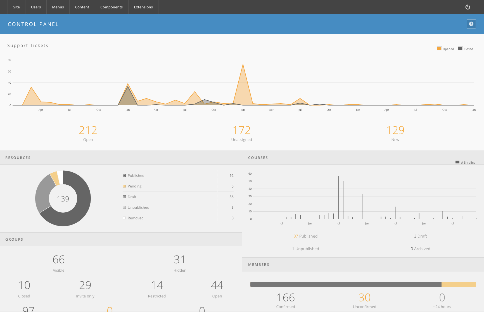

Hub managers
Daily Maintenance
The work a hub needs to keep running: approving what users submit, moving tools through the publishing pipeline, answering support tickets, posting site notices, and keeping the scheduled jobs running.
Nobody does all of this every day. On a working hub it settles into a rhythm, and knowing the rhythm is most of the job — a manager who checks the same handful of screens on a Monday morning almost never has to firefight on a Friday.
The rhythm
Every day, if the hub takes submissions. Open the control panel and read the counts. If anything is waiting — pending resources, pending publications, new support tickets, tools needing an administrator — clear it or assign it. A submission left in a queue looks to the submitter like the hub ignoring them, and they will not ask twice.
Once a week. Work through the rest:
| Check | Where | Why |
|---|---|---|
| Support queue, oldest first | Components → Support, filter status:open |
Old tickets are the ones that turn into complaints |
| Unassigned tickets | Components → Support, filter owner:none |
An unassigned ticket is nobody's work |
| Abuse reports | Components → Support → Abuse, Outstanding | These are usually spam, and spam breeds |
| Cron jobs actually running | Components → Cron | A Last Run far older than the job's schedule means nothing scheduled is happening at all. See Scheduled Tasks |
| Stuck records | Site → Maintenance → Global Check-in | Locks never expire on their own |
After an incident — a spam wave, a broken deployment, an outage:
- Post a notice, if visitors can see the problem. Site Notices.
- Fix the cause.
- Clear whatever the incident left behind: trashed content, abuse reports, accounts, stuck check-outs.
- Take the notice down. It has to come down by hand, or by a Finish Publishing date you set when you posted it.
Never on a Friday afternoon. Anything that cannot be tested first: URL rewriting, a template change, a permissions change on a live component. Those belong on a morning when you can watch what happens.
The dashboard
The first screen after you log in to /administrator is the Control Panel,
served by com_cpanel. It has no content of its own. It renders every
administrator module published in the cpanel position, one collapsible
panel per module:

echo Html::sliders('start', 'panel-sliders', array('useCookie' => '1'));
$modules = Module::byPosition('cpanel');
foreach ($modules as $module)
{
$output = Module::render($module);
$params = new Hubzero\Config\Registry($module->params);
if ($params->get('automatic_title', '0') == '0')
{
echo Html::sliders('panel', $module->title, 'cpanel-panel-' . $module->name);
}
elseif (method_exists('mod' . $module->name . 'Helper', 'getTitle'))
{
echo Html::sliders('panel', call_user_func_array(array('mod' . $module->name . 'Helper', 'getTitle'), array($params)), 'cpanel-panel-' . $module->name);
}
else
{
echo Html::sliders('panel', Lang::txt('MOD_' . $module->name . '_TITLE'), 'cpanel-panel-' . $module->name);
}
echo $output;
}
echo Html::sliders('end');
So what the dashboard shows depends entirely on which modules the hub publishes there. A fresh install ships only two panels — Popular Articles and Recently Added Articles. The panels a working hub usually adds are:
| Module | What its panel shows |
|---|---|
mod_resources |
Resources by state: published, unpublished, pending, draft, removed |
mod_tools |
Tool contributions by pipeline state |
mod_supporttickets |
Open, new, and unassigned support tickets |
mod_supportactivity |
Recent support activity |
mod_answers |
Questions asked and closed |
mod_wishlist |
Wishes pending, accepted, granted, rejected, withdrawn, removed |
mod_groups |
Groups by type and groups pending approval |
mod_members |
New, confirmed, and approved members |
mod_users |
Pending new users awaiting approval |
mod_courses |
Course activity needing attention |
Each count links to the matching list in the component, so the dashboard is a set of jump-off points rather than a report.
That is the useful way to think about it: the dashboard is a to-do list, and a hub with the right panels on it is one where the daily check is a ten-second glance. A hub with only the two shipped panels shows you popular articles and nothing you actually need to act on, which is why the first thing most managers do is add the panels below.
To add or remove a panel, go to Extensions → Module Manager, set the
Client filter to Administrator, then edit the module and set its
Position to cpanel. The position and type filters only list what the
selected client offers, so administrator modules are invisible while the
filter is on Site.
In this section
- Approving Content — the pending queues for resources and publications, and how to stop them existing at all.
- Tools — the tool contribution pipeline, from a developer's registration form to a launchable tool. Only for hubs that host tools.
- Support Tickets — working the ticket queue and the abuse reports.
- Site Notices — the maintenance banner, and why it is a module rather than a component.
- Scheduled Tasks — the jobs behind digests, mailings, search indexing and expiries. Read this one early: several features on a hub do nothing at all until a job is created for them, and only three jobs exist on a new hub.
Rewritten and checked against 2.4-main @ 35f103b1b3 on 2026-09-10.